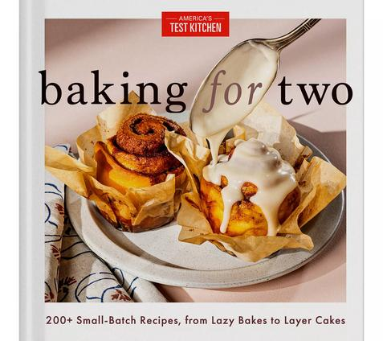

nostalgic → determined → exhausted → joyful → proud → reflective
I was standing in front of a walk‑in cooler at 2 a.m., frosting a six‑tier wedding cake with one hand and wiping sweat off my forehead with the other, when I realized I hated the thing I used to love.
Not the cake. I loved the cake. The cake was perfect—lemon with raspberry filling, Swiss meringue buttercream, 250 servings. I had done the math in my head while walking from the hotel kitchen to the loading dock. Flour × 20.8. Sugar × 20.8. Butter × 20.8. Baking powder × 8.2. The numbers clicked into place like puzzle pieces.
I hated the kitchen. The 14‑hour days. The phone calls from brides who wanted to add fifty guests at the last minute. The way my feet hurt so badly by midnight that I walked like a ninety‑year‑old.
And yet.
Every time I pulled a perfectly scaled cake out of the oven—every time a bride told me it was the best thing she’d ever eaten—I felt a spark. That spark kept me going for eight years.
Then I went back to school.
The Night I Decided to Change Everything The decision didn't come in a dramatic moment. There was no slammed spatula, no tearful resignation speech. It came during a conversation with a hotel banquet manager named Diane, who had worked there for thirty years and had seen every chef come and go.
"You're different," she said. We were sitting on milk crates in the dry storage room, eating day‑old bread because we hadn't had a real meal in eight hours. "You actually understand the numbers. Most chefs just guess and hope."
"I have to understand the numbers," I said. "If I mess up a 300‑serving cake, that's $1,200 in ingredients and a bride who wants to kill me."
Diane looked at me. "Have you ever thought about teaching?"
I laughed. "Me? Teach? I barely finished high school math."
I thought about it for the rest of my shift. And the next day. And the next week.
That spring, I enrolled in night classes at the College of Charleston. I was 34 years old, working full‑time as a pastry chef, and taking Calculus I with a bunch of nineteen‑year‑olds who had never seen a commercial kitchen.
I was also the only student who brought leftover croissants to study sessions. That made me popular.
The Math Awakening The first semester nearly killed me. Not because the math was hard—I had been doing complex scaling for years without realizing it—but because I was exhausted. My schedule looked like this:
6:00 a.m. – Wake up, get my kids ready for school. 8:00 a.m. – Prep work at the hotel. 2:00 p.m. – Start baking for the next day's events. 10:00 p.m. – Class starts (yes, 10 p.m. to midnight, twice a week). 12:30 a.m. – Drive home, eat something, sleep four hours. Repeat.
I fell asleep in class once. The professor, a kind man named Dr. Patterson, didn't call me out. He just slid a cup of coffee onto my desk and kept lecturing about derivatives.
The math itself was a revelation.
I had been using baker's percentage for years without knowing the formal name. I had derived the leavening exponent (0.75) through trial and error in my kitchen. But seeing it written out as algebra—*f(x) = x^0.75*—changed something in my brain.
Ratio became more than a word. It was a relationship. A proportion that stayed constant even as the recipe grew or shrank.
I remember the exact moment it clicked. We were studying exponential functions, and Dr. Patterson wrote on the board: If you double the radius of a circle, the area quadruples. That's not linear.
I raised my hand. "That's like scaling a cake pan. A 9‑inch pan has about 64 square inches of area. A 12‑inch pan has 113 square inches—almost double the area, but the radius only increased by 33 percent."
Dr. Patterson stared at me. "Are you a math major?"
"That explains why you're the only one who cares about circle area."
I got an A in that class. Not because I'm a genius—I'm not—but because I had been doing applied math for a decade without knowing it. All I needed was the vocabulary.
The Student Who Terrified Me I finished my math degree in four years—two classes per semester, every semester, plus summer sessions. I walked at graduation in May, two weeks before my 39th birthday. My husband took a photo of me holding my diploma in our kitchen, flour on the counter behind me, the kids making funny faces.
Then I quit the hotel.
A few months later, the community college called. They needed someone to teach Culinary Math—a new course they were piloting for baking and pastry students. The dean had heard about me through Diane (who still worked at the hotel and apparently never stopped talking about me).
I said yes. I was terrified.
My first semester, I had 14 students. Most of them were young—eighteen, nineteen years old—and most of them hated math. They had chosen baking because they thought it was creative, not technical.
On the second day of class, a student named Jasmine raised her hand.
"I can't do math," she said. "I've never been able to do math. I failed algebra twice in high school."
"What's 2 × 3?" I asked.
"What's 4 × 3?"
"What's 200 ÷ 4?"
She paused. "Fifty."
She frowned. "That's not math. That's just numbers."
"Math is just numbers," I said. "The problem isn't that you can't do math. The problem is that no one ever showed you why it matters."
The Assignment That Changed Everything Halfway through the semester, I gave the class an assignment: scale a family‑size recipe (4‑6 servings) to feed 50 people. Any recipe. Any cuisine. They had to show their work—scaling factor, ingredient adjustments, equipment limitations, timing changes.
Most of the students picked simple recipes. Spaghetti. Chili. Mac and cheese (my influence). But Jasmine? Jasmine picked chocolate soufflé.
I almost choked on my coffee when I read her proposal.
"Jasmine," I said after class. "Soufflé doesn't scale. Like, at all. The chemistry changes. The timing changes. The structure is incredibly fragile."
"I know," she said. "That's why I picked it."
"Because you said we should pick something that scares us."
I sat down. "Okay. Walk me through your plan."
She pulled out a notebook—the kind with a spiral binding and doodles in the margins—and showed me her math.
Original recipe: 6 servings
60g (2.1oz) butter
60g (2.1oz) flour
240g (8.5oz) milk
120g (4.2oz) dark chocolate
6 eggs, separated
100g (3.5oz) sugar
Scaling factor for 50 servings: 50 ÷ 6 = 8.33
She had calculated everything. But here's what made me pause: she didn't plan to make one batch of 50. She planned to make eight batches of 6 servings, plus one batch of 2 servings.
"Eight batches," I said. "That's 48 servings. Then a partial batch for the last 2."
"But you'll have to separate eggs for each batch. That's like 50 eggs total. You know that, right?"
She nodded. "I counted. I'll need 48 egg whites and 48 egg yolks. The partial batch is 2 more eggs."
I looked at her scaling notes. She had accounted for oven capacity (her home oven could fit two 6‑serving soufflé dishes at a time). She had planned the timing (eight batches = about two hours of baking, staggered). She had even considered the holding time—soufflés deflate quickly, so she would need to serve them immediately after each batch came out of the oven.
"Jasmine," I said. "This is… incredible."
She smiled. "I told you I could do math."
The Day We Ate 50 Soufflés The final assignment was due on a Thursday. Jasmine showed up at 8 a.m.—two hours before class—with a rolling cooler full of chocolate soufflé ingredients and a determined look on her face.
She used the community college kitchen (I had reserved it for her). I sat at a counter and watched.
Batch 1: Butter the dishes. Melt the chocolate. Make the béchamel. Separate the eggs. Fold in the whipped egg whites. Into the oven at 375°F. 15 minutes.
While batch 1 baked, she started batch 2.
Batch 1 came out perfect. Puffed high. Golden brown. Fragile but intact. She served them immediately to the students who had arrived early.
Batch 2 came out perfect. Then batch 3. Batch 4.
By 10 a.m., she had baked 48 soufflés. The classroom smelled like chocolate and victory. Students were lined up at the counter, holding plates, waiting for their turn.
The partial batch (2 servings) went into the oven at 10:15 a.m. She pulled them out at 10:30 a.m., dusted them with powdered sugar, and handed one to me.
"I did it," she said.
"You did it," I agreed. "How do you feel?"
I ate my soufflé. It was light, airy, intensely chocolate—maybe the best thing I'd ever tasted in that kitchen. Not because of the recipe. Because of the math.
Why I Left the Kitchen for the Classroom People ask me sometimes if I miss being a pastry chef. The answer is yes and no.
I miss the 2 a.m. quiet. I miss the feeling of pulling a perfect cake out of the oven. I miss the smell of butter and sugar and vanilla filling the kitchen.
I don't miss the exhaustion. I don't miss the panic of last‑minute changes. I don't miss the way my body felt after 14 hours on my feet.
But here's the thing I didn't expect: teaching feels like baking, but the results last longer.
When I bake a cake, it's gone in an hour. People eat it, they say nice things, and then it's over.
When I teach someone to scale a recipe, they use that skill for the rest of their lives. Every time they cook for a holiday, every time they double a batch of cookies, every time they feed a crowd—they're using the math I taught them.
Jasmine graduated last year. She's working at a bakery in Greenville, scaling bread recipes from 50 loaves to 500. She sends me a text every few months: "Made your mac and cheese for 200 again. Still works."
That text means more to me than any compliment I ever got as a pastry chef.
The Tool That Came From Teaching When I started teaching, I built simple worksheets for my students. Scaling factor tables. Leavening adjustment formulas. Pan volume calculations. My students used them, passed the class, and then asked me: "Can I take this worksheet home?"
I realized that home cooks needed the same tools. Not everyone has a math degree. Not everyone wants to calculate πr²h at 10 p.m. on a Tuesday.
So I built the Baker's Percentage Converter—the tool I wish I'd had when I was scaling wedding cakes at 2 a.m.
The Victorian Kitchen (Too Small, Perfect for Testing) I live in a restored 1890s Victorian in Charleston. The kitchen is 8x10 feet—tiny by modern standards, with almost no counter space and a stove that predates digital displays.
People ask me how I test large‑batch recipes in such a small kitchen.
The answer is: I don't test large batches. I test small batches and scale the math.
If I want to develop a recipe for 100 cookies, I start with 12. I bake them. I adjust. Then I scale the final version using the math. That way, I only waste 12 cookies instead of 100.
This is the secret that most cookbook authors don't tell you: The testing happens at a small scale. The scaling happens on paper.
My small kitchen forces me to be precise. Every ingredient is measured in grams and ounces. Every step is timed. Every failure is logged in a notebook that lives on the shelf above my stove.
That notebook is my real kitchen.
What I Tell My Students on Day One On the first day of every semester, I stand in front of my classroom and say the same thing:
Every semester, at least one student cries. Not from frustration. From relief. Because someone finally told them they were capable.
The Flour‑Dusted Life My kids are 12, 9, and 6 now. They've grown up in a kitchen that always has a thin layer of flour on the counters. They know the difference between all‑purpose and bread flour. They can read a scale. My nine‑year‑old recently scaled a pancake recipe from 8 pancakes to 24 without any help.
"Mom, I did the math," she said, showing me her notebook.
I hugged her so hard she complained.
I'm 41 now. I teach three days a week at the community college. I run this website from my home office (which is also the laundry room—Victorian houses don't have extra rooms). I develop recipes in my too‑small kitchen, bake them in my too‑small oven, and share them with people who thought they couldn't scale.
The wedding cake that collapsed at 2 a.m. feels like a lifetime ago. But I'm grateful for it. That disaster taught me the math that changed my life.
Now I get to teach it to you.
Quick Reference: From Pastry to Classroom Role Years What I Learned Pastry chef 8 Scaling under pressure. The 0.75 exponent. How to cry quietly in a walk‑in cooler. Math student 4 The formal vocabulary for what I already knew. Baker's percentage = ratios. Pan volume = πr²h. Teacher 5 Everyone can do math. They just need a reason to care. Recipe developer Ongoing Test small, scale big. Write everything down. Weigh everything in grams and ounces. The formula that connects all of it: Scaling isn't about numbers. It's about confidence. Once you know the math, you stop being afraid of the kitchen.
— Olivia Hartmann, Culinary Math Educator
P.S. Jasmine still texts me soufflé photos. Last week, she scaled the same chocolate soufflé recipe to 200 servings for a catering event. She sent me a picture of all 200—lined up on a table, perfectly puffed. I cried a little. I'm not embarrassed about it.
"Quick Reference"Recipe Scaling Calculator